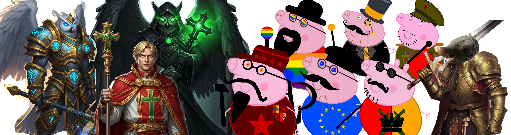

Witaj w Świecie Felorostu!
Niniejsza encyklopedia jest zbiorem wiedzy o świecie Multikont, Strigallorów i Felorków. Uniwersum Felorostu stanowi fantastykę prawniczą. Wszystkie jego elementy stanowią własność intelektualną autora.
Encyklopedia stanowi również miejsce publikacji artykułów Biuletynu Informacji o Sprawach Publicznych Korony Krulestwa Multikont.
Aktualności i Wydarzenia
Obecnie znajdujemy się w III Erze Felorostu, roku 2026. W tej erze w Feloroście zamieszkali ludzie, Strigallorowie i Multikonta, a także powstało Lewosławie.
Wkład w Wiki
To uniwersum stale się rozwija. Jeśli chcesz dodać nową postać lub opisać nieznaną dotąd krainę, skontaktuj się z Pałacem Krula Multikont na FB.